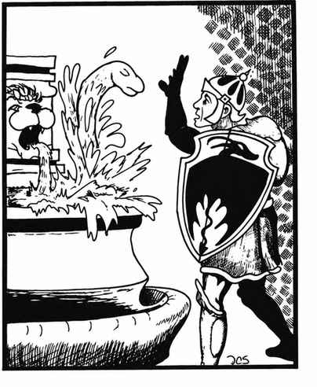
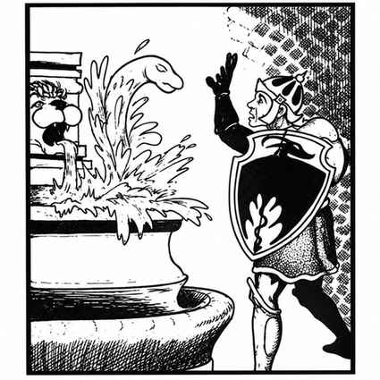

水怪 · Water Weird

 |
|
水怪是来自水元素位面的生命体，以未知方式吞食所有活物的精气。它会在两个战斗轮内由水中形成，呈蛇形，并以 6 骰生物的方式攻击。被击中的生物若未通过麻痹豁免，会被拖入水中。锐器命中水怪只造成 1 点伤害，钝器造成正常伤害；累计等于其全部生命值的伤害会扰乱其形体，2 个战斗轮后重新形成。
寒冷法术会减慢水怪，火焰法术造成一半或更少伤害；净化水术会直接杀死它，其他攻击既不伤害也不扰乱它。水怪在 1d20 掷出 11 或更高时，能够夺取一个水元素的控制权。